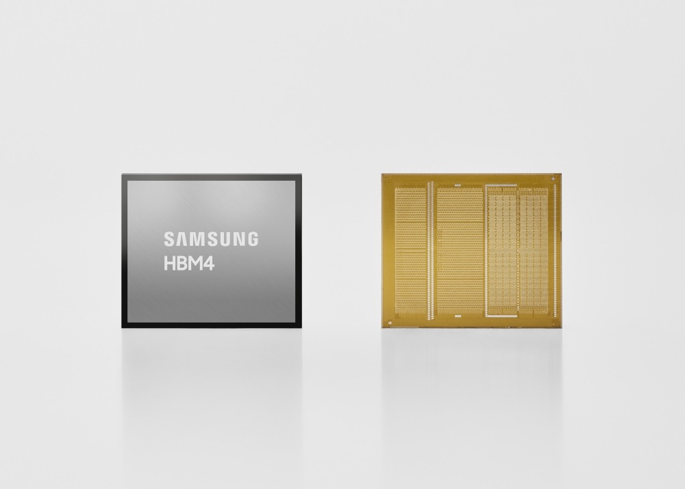
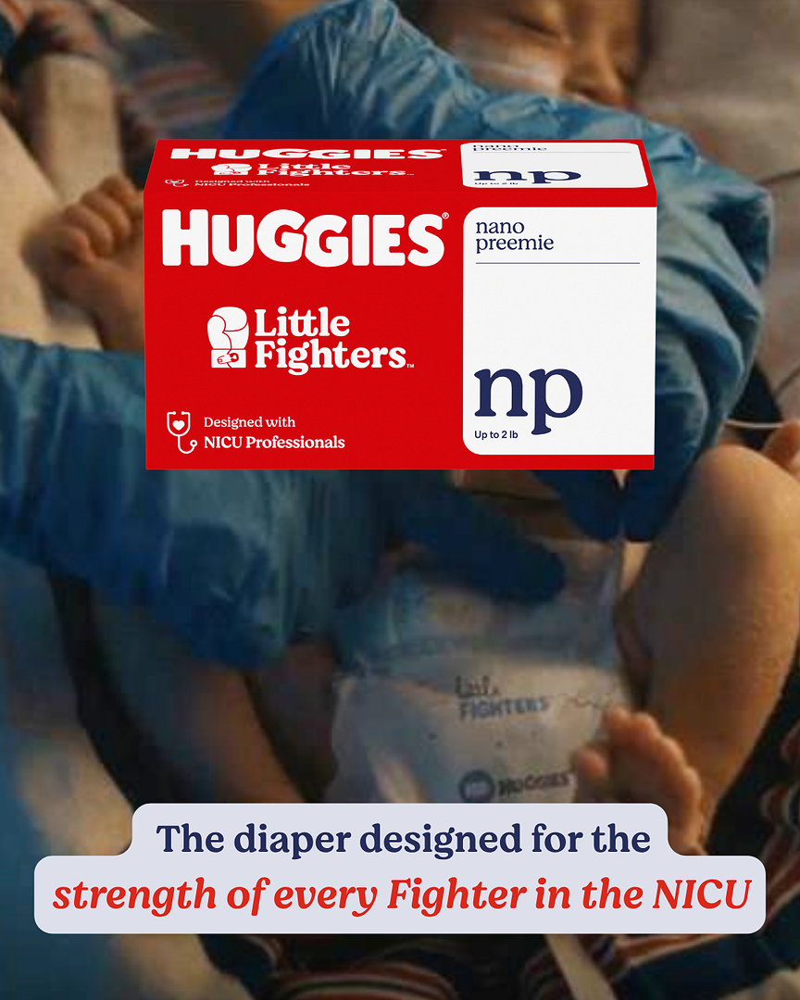
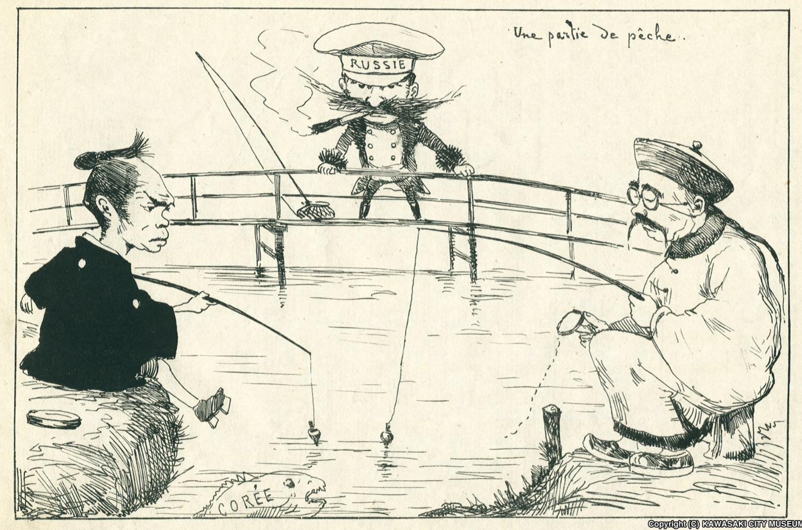
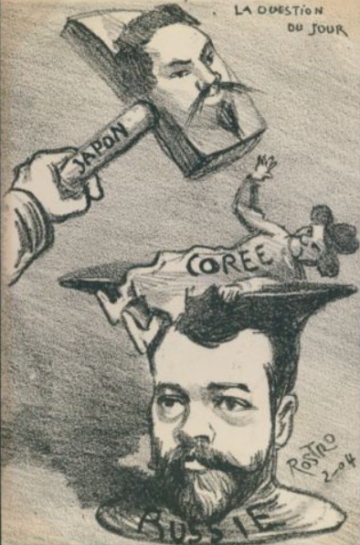
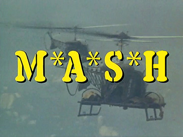

Korean companies supply the high-bandwidth memory that feeds data to AI processors. In 2026, Samsung and SK hynix began shipping the next generation: HBM4.
Sources: Samsung, February 2026 · SK hynix, July 2026


Start with the argument. Follow the evidence.
Korean companies supply the high-bandwidth memory that feeds data to AI processors. In 2026, Samsung and SK hynix began shipping the next generation: HBM4.
Sources: Samsung, February 2026 · SK hynix, July 2026
Russia’s partnership brings new resources. The 20×10 policy is adding regional factories and services. State-owned firms also develop brands and compete for customers. State ownership and market activity can coexist. More cars now bring traffic jams to Pyongyang. See the videos and evidence.
The Bank of Korea estimated that North Korea’s economy grew 3.5% in 2025. Its ability to mobilize resources deserves attention. That does not establish better living conditions.
Source: Bank of Korea, July 2026
Wisconsin exported $723.7 million in goods to South Korea in 2025. The connection also includes a shared history of war and remembrance.
Source: WEDC, 2025 trade report
Wisconsin’s Korean War storiesJust released: September 2026 exports reached $120.94 billion—including $60.30 billion in semiconductors.
October 1 reportPhotographs: Samsung and Kimberly-Clark credits · Paegunsan credit. Huggies is a US product photograph; the Wisconsin–Korea connection is explained on the linked page.



The earlier opening traced images of Korea as an object of other countries’ ambitions. The complete original opening retains the satellite image and Victor Cha passage.